![Neumont University]() ← GAT350 · Texture Mapping
← GAT350 · Texture Mapping
Texture Mapping
Wrapping images around geometry: UV coordinates, samplers, mipmaps, material maps, cubemaps and skyboxes.
THE IDEAWhat is texture mapping?
Texture mapping adds high-frequency detail (color, roughness, small bumps) to a model by mapping an image onto its surface.
A wall can be two triangles with a brick photo on it. You don’t need a triangle for every brick.
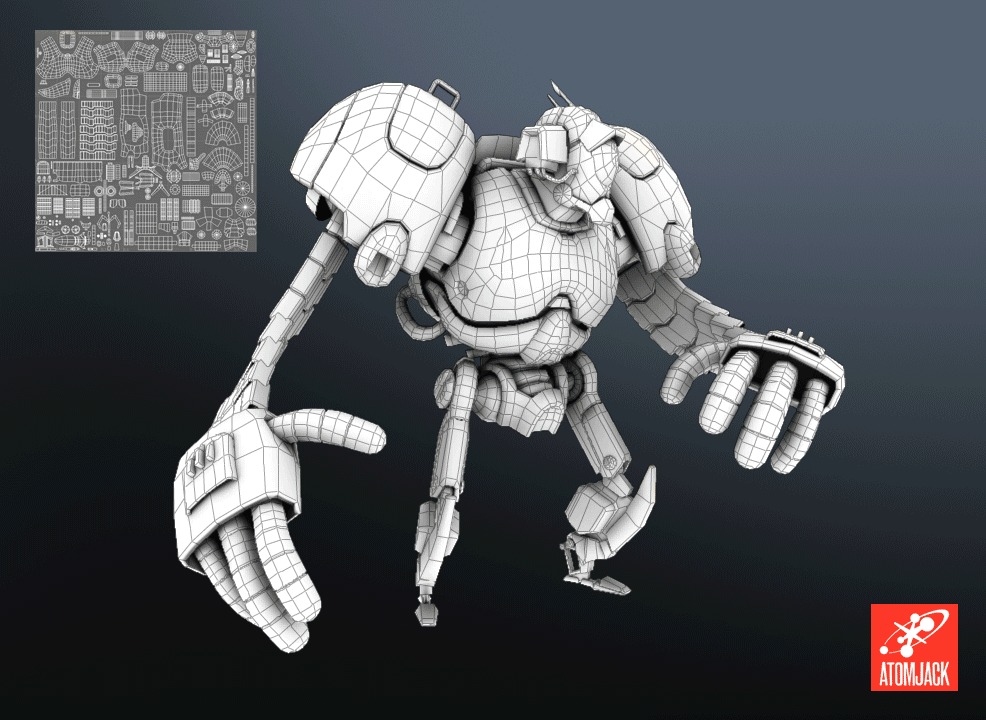
A 1024×1024 texture has about one million texels, no matter how big it appears on screen.
TEXTURE COORDINATESUV coordinates
Each vertex stores a UV: where in the image that corner reads from. The GPU blends the UVs across the triangle.
UVs are normalized: 0 to 1 across the image, whatever its size.
TEXTURE COORDINATESEvery vertex gets a UV
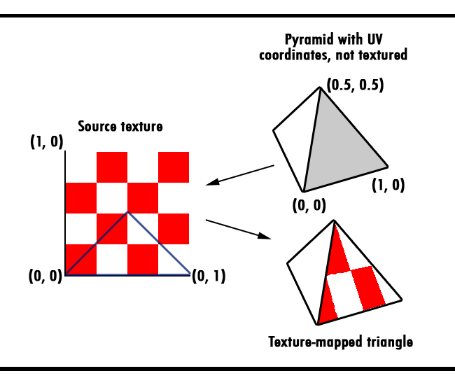
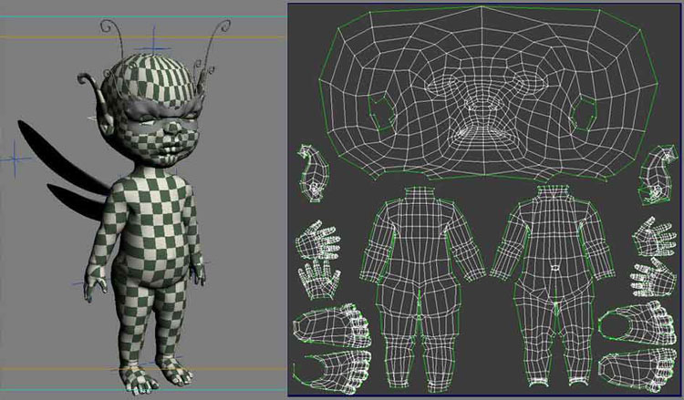
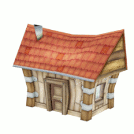
Artists unwrap a model in a 3D tool (Blender, Maya). The UVs are saved in the model file, and you put them in your vertex buffer next to the position and normal.
TEXTURE COORDINATESUVs ride along with each vertex
THE BIG PICTUREFrom the CPU to the GPU
- The image file sits on disk, compressed (PNG, JPG).
- The CPU decodes it into raw texels in system RAM. It has a few fast cores, built for logic, not millions of identical jobs.
- Copy it once across the bus into the GPU’s own memory (VRAM).
- Every frame, thousands of GPU cores sample it in parallel, right next to fast VRAM.
SDL3 GPU · STEP 1Create the texture
IMG_Load
image file → SDL_Surface
SDL_ConvertSurface
any format → RGBA, 4 bytes
SDL_GPUTextureCreateInfo
describe what you want
SDL_CreateGPUTexture
empty texture in GPU memory
SDL3 GPU · STEP 2Upload the pixels
SDL_Surface
pixels in normal RAM
Transfer buffer
staging memory both can see
Copy pass
a command the GPU runs
SDL_GPUTexture
GPU memory, ready to sample
SDL_GPUTextureTypeTexture types
OpenGL also had 1D, rectangle and buffer textures. SDL3 GPU doesn’t: use a 2D texture that is 1 texel tall, or a storage buffer.
SDL_GPUTextureFormatTexture formats
HLSL · FRAGMENT SHADERSampling a texture
| resource | vertex | fragment |
|---|---|---|
| textures + samplers | t#, s# · space0 | t#, s# · space2 |
| uniform buffers | b# · space1 | b# · space3 |
SDL_GPUSamplerSamplers: how to read the texture
In OpenGL, filtering and wrapping were settings on the texture (glTexParameteri). In SDL3 GPU they live in a separate sampler object.
One sampler can be reused with many textures, and one texture can be read with different samplers.
MAG / MIN FILTERTexture filtering
When a texture is stretched, screen pixels fall between texels. The filter decides what color they get.
FILTERINGNearest, linear, anisotropic
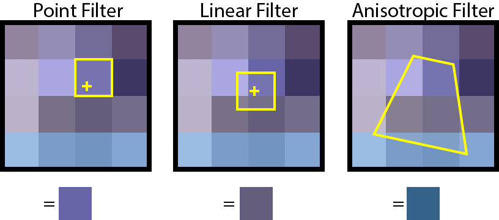
- Nearest: use the one closest texel. Blocky, good for pixel art.
- Linear: blend the 4 nearest texels. Smooth.
- Anisotropic: take extra samples along the direction the surface is tilted. Sharp floors and roads at steep angles.
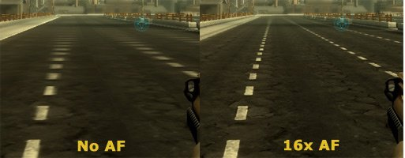
MIPMAPSSmaller copies for far away
A mipmap is a chain of pre-shrunk copies, each half the size of the last. Far surfaces read a small level, so they don’t shimmer.
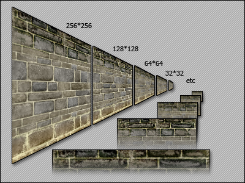
256 → 128 → 64 → 32 → … → 1. The whole chain costs only ⅓ more memory.
ADDRESS MODEOutside 0 to 1
UVs can go past 0 and 1. The sampler’s address mode decides what you see there.
OpenGL’s GL_CLAMP_TO_BORDER doesn’t exist in SDL3 GPU, because not every backend supports it.
UV TRANSFORMTiling and offset
Multiply UVs to tile a texture; add to them to offset (scroll) it. Two uniforms, one line of shader code.
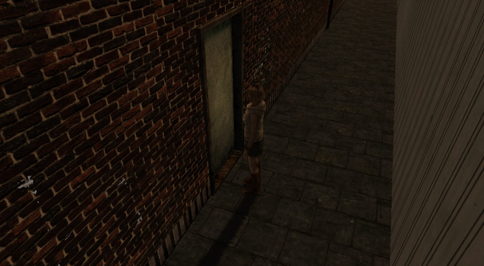
TEXTURE UNITS → SAMPLER SLOTSBinding more than one texture
Each slot holds a texture and a sampler: slot 0 is t0/s0, slot 1 is t1/s1. This replaces glActiveTexture(GL_TEXTURE0 + n). Remember to set num_samplers = 2 when you create the shader.
MULTI-TEXTURECombining textures
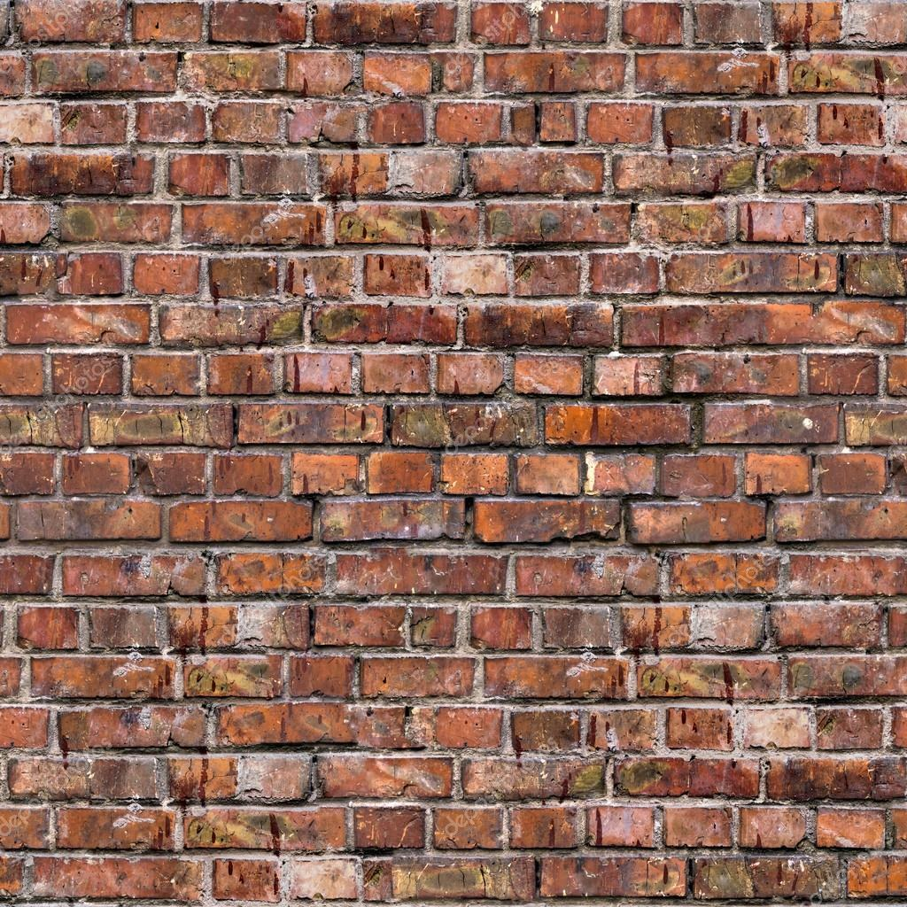
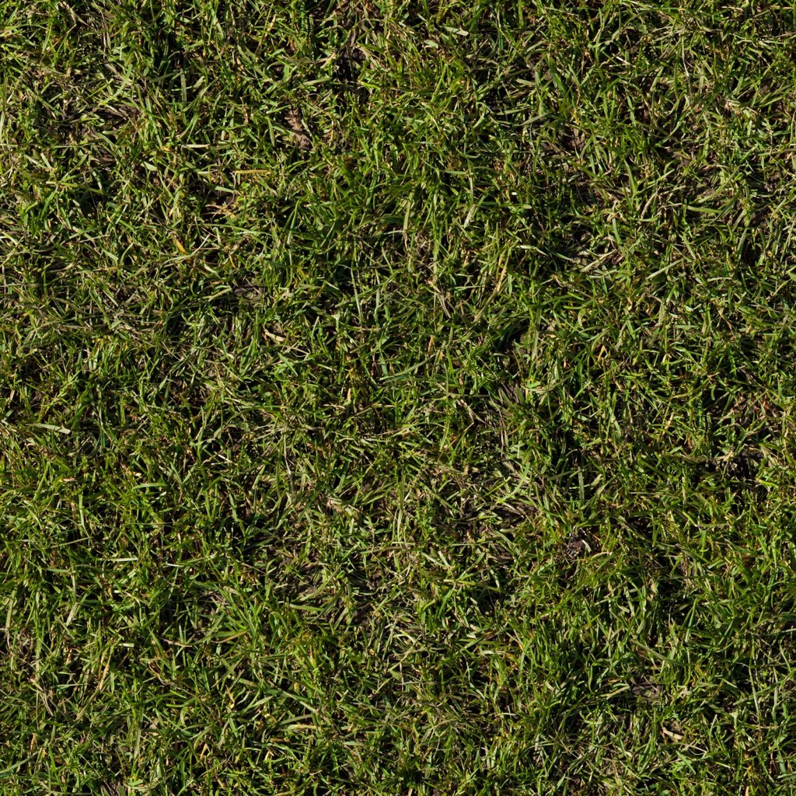
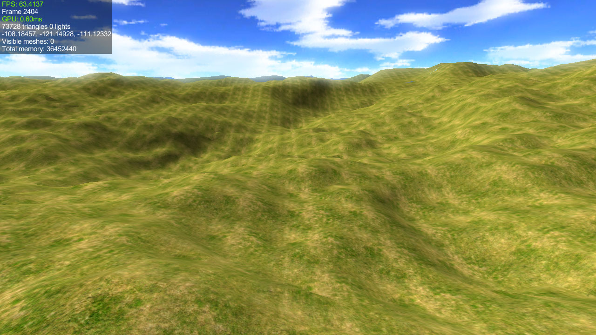
MATERIAL MAPS · 1Albedo map
The albedo (diffuse) map is the surface’s base color under white light, with no shading baked in. Lighting multiplies it.
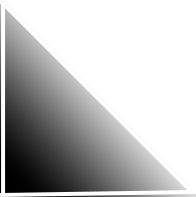
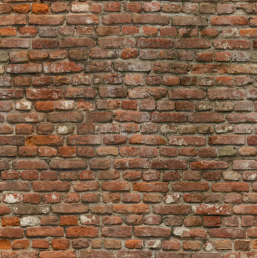
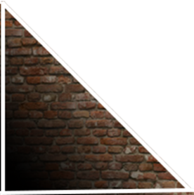
MATERIAL MAPS · 2Specular map
A grayscale map that says how shiny each texel is. White = strong highlight, black = none. Wet stone shines; dry mortar doesn’t.
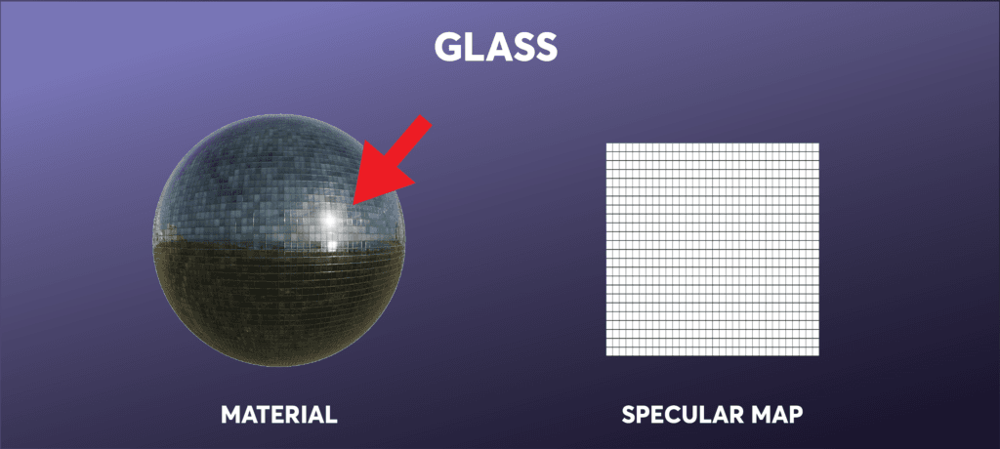
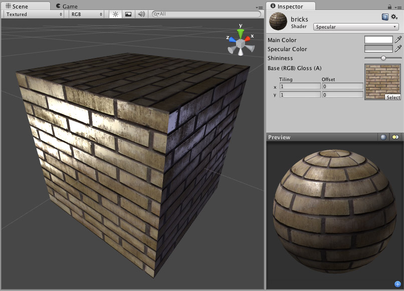
MATERIAL MAPS · 3Emissive map
Emissive parts give off their own light: screens, neon, lava. The map is added after lighting, so it glows even in the dark.
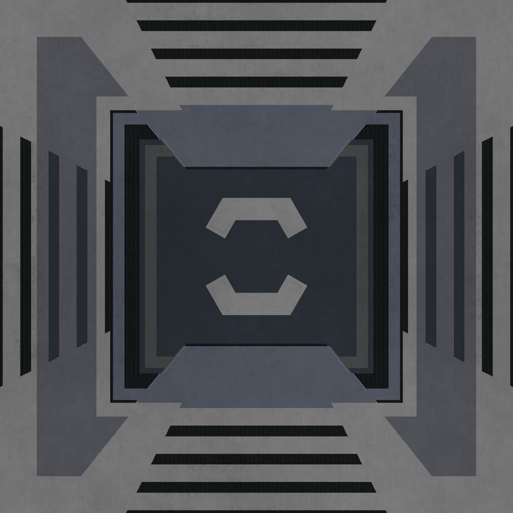
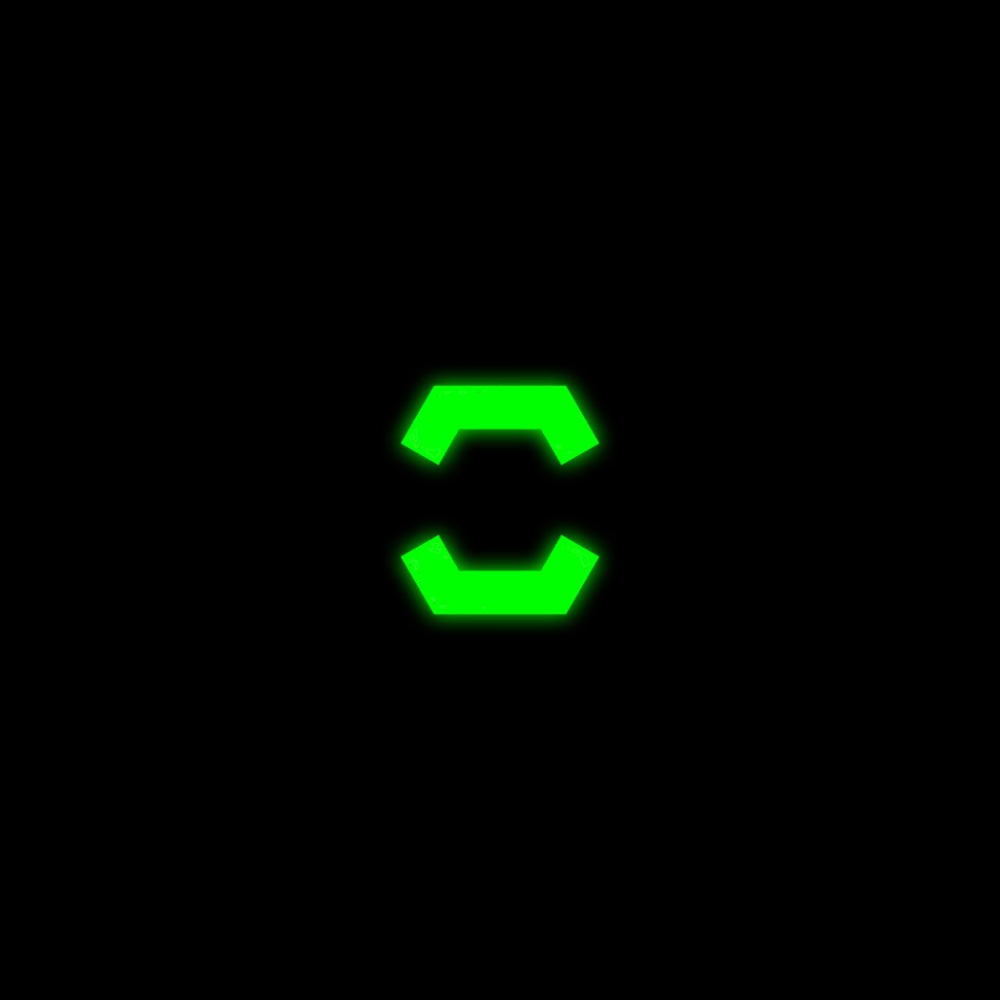
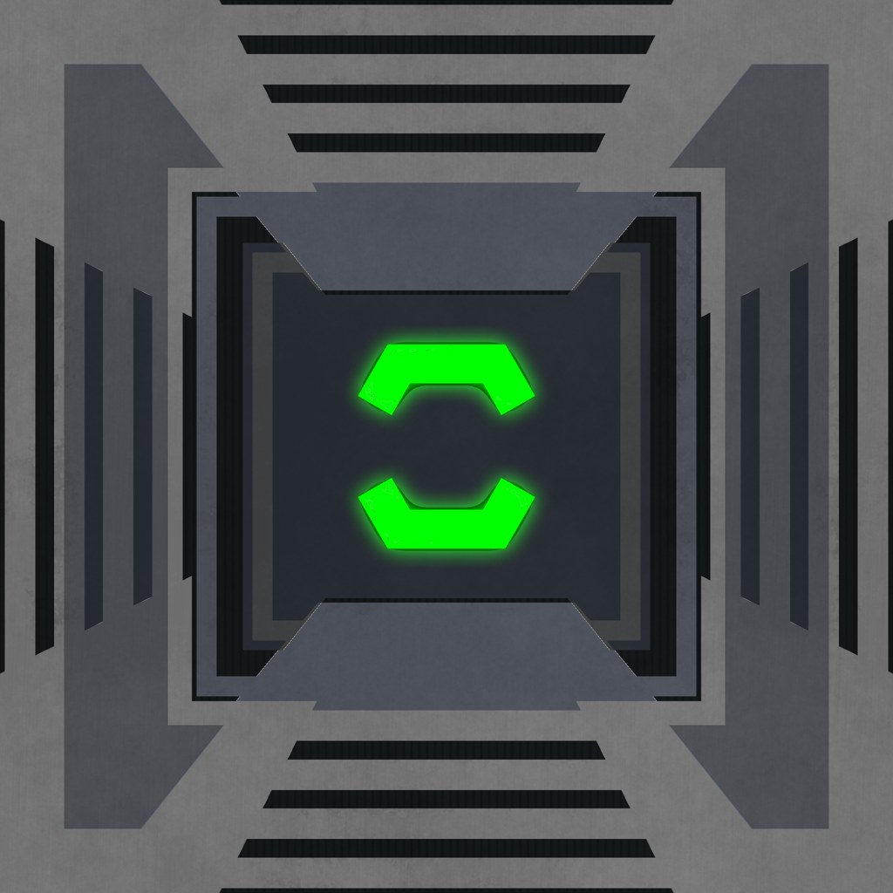
EMISSIVEWhere you’ve seen it
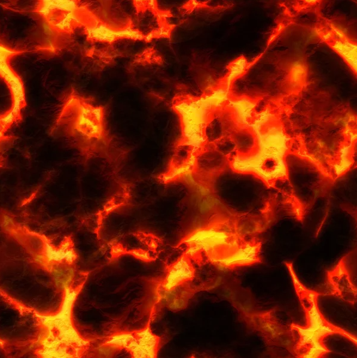
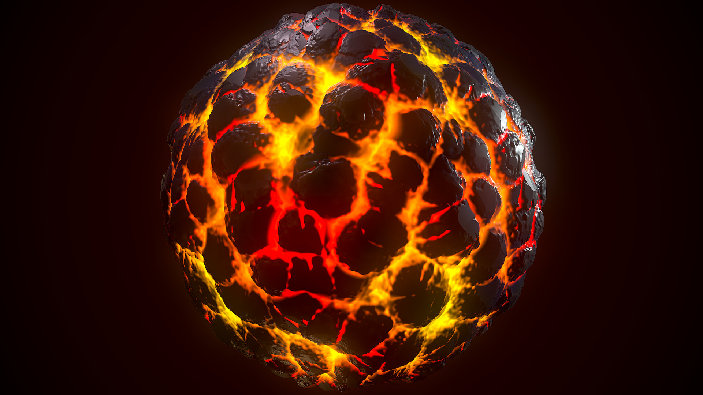
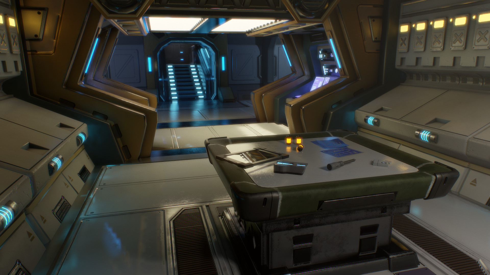
SDL_GPU_TEXTURETYPE_CUBECubemaps
Six square images, one for each direction along the world axes, that form a cube around the viewer. Used for skyboxes and reflections.
SAMPLING A CUBEMAPA direction, not a UV
A 2D texture is read with a float2 UV. A cubemap is read with a float3 direction from the center. The largest component picks the face.
CUBEMAPS IN GAMESSkybox
A skybox is a cube that surrounds the camera, textured with a cubemap of far-away scenery: sky, mountains, stars. You get a believable world without modeling any of it.
It must look infinitely far away: it turns with the camera but never gets closer.
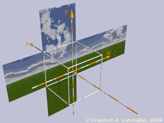
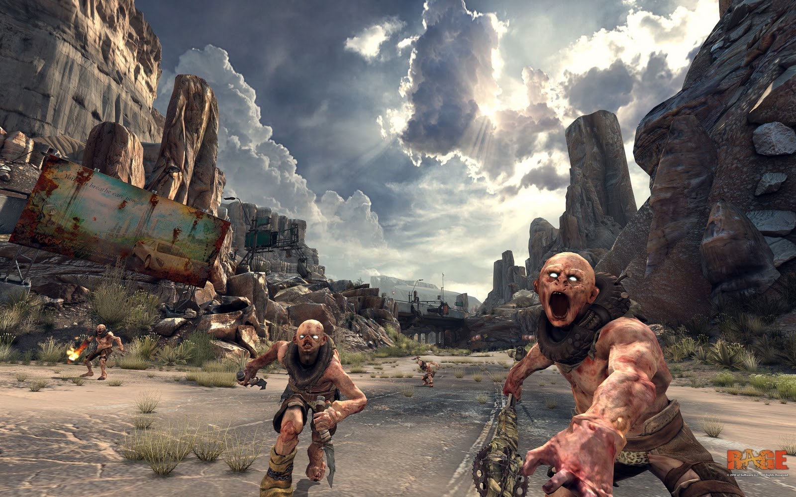
TRY ITWhy the sky never moves
Walk the camera sideways. With the full view matrix the 1-unit sky cube slides past like a small box. Use rotation only and it stays put.
Turn depth writing on: the sky is drawn first and is only 1 unit away, so it hides the crates behind it.
SDL3 GPUDrawing a skybox
- Load the six images into one CUBE texture (layers 0–5).
- Make a cube mesh, −1 to 1, around the camera.
- Give the skybox its own pipeline: depth test on, depth write off.
- Cull the front faces, so you see the inside of the cube.
- Draw it first, with the view’s rotation only.
- Draw the rest of the scene with the normal pipeline.
HLSLSkybox shaders
ENVIRONMENT MAPPINGReflecting the world
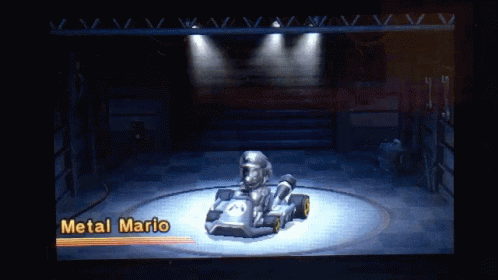
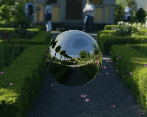
Instead of tracing real rays, reflect the view direction off the surface normal and use the result to sample the skybox cubemap. Cheap, and it looks like chrome.
THE MATHreflect(i, n)
dot(n, i) projects i onto the unit normal n: how far i goes into the surface. Remove that part twice and it bounces out.
float3 r = reflect(i, n); The angle in equals the angle out.HLSL · VERTEX SHADERReflection shader
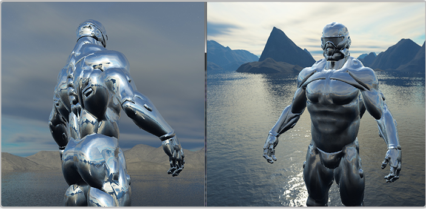
REFRACTIONBending light
Light bends when it enters glass or water. The index of refraction (IOR) says how much: the speed of light in a vacuum ÷ its speed in the material. Snell’s law: n₁ sin θ₁ = n₂ sin θ₂.
float3 t = refract(i, n, n₁ / n₂); If the ray can’t get out (total internal reflection), it returns (0, 0, 0).HLSL · VERTEX SHADERRefraction shader
TRY ITReflect or refract
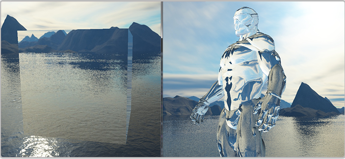
Simplified demo: one bounce, no Fresnel, calculated per pixel.